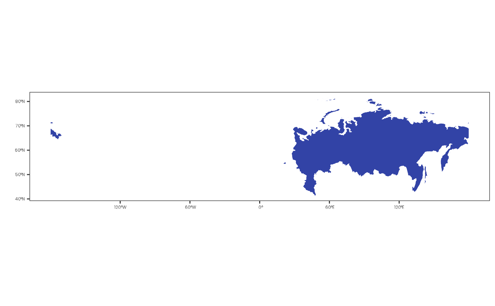

shift_and_crop() shifts and rotates both a raster and a vector by a
specified horizontal distance, then crops the raster to the extent of the
shifted vector.
This function is particularly useful for working with rasters and vectors that span the dateline (e.g. the Russian territory).
Arguments
- raster
A
SpatRasterobject to be shifted, rotated, and cropped.- vector
A
SpatVectorobject to be shifted and rotated.- dx
(optional) A numeric value indicating the amount of the horizontal shift in degrees. Positive values shift to the right, negative values shift to the left (default:
-45).- precision
(optional) A numeric value specifying the number of decimal digits to use when rounding longitude and latitude coordinates (default:
5).- overlap_tol
(optional) A numeric value specifying the tolerance for overlapping geometries when combining vectors. This value controls the allowable error when merging overlapping geometries (default:
0.1).- ...
Additional arguments passed to
crop().
Value
A SpatRaster object that has been shifted and
rotated by the specified amount in degrees, then cropped to the extent of
the provided vector.
See also
Other raster functions:
shift_and_rotate()
Examples
library(dplyr)
library(geodata)
#> Loading required package: terra
#> terra 1.8.54
library(terra)
if (curl::has_internet()) {
raster <-
expand.grid(
seq(-179.75, 179.75, by = 0.5),
seq(-89.75, 89.75, by = 0.5)
) |>
as_tibble() |>
rename(x = Var1, y = Var2) |>
mutate(value = rnorm(259200)) |>
rast(type = "xyz") %>%
`crs<-`("epsg:4326")
world_shape <- world(path = tempdir())
raster <- raster |> crop(world_shape, mask = TRUE)
raster |> plot()
vector <- gadm(country = "rus", level = 0, path = tempdir())
vector |> plot()
raster |> shift_and_crop(vector, -45) |> plot()
}
